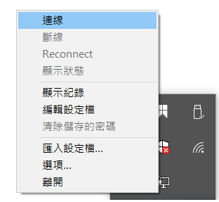
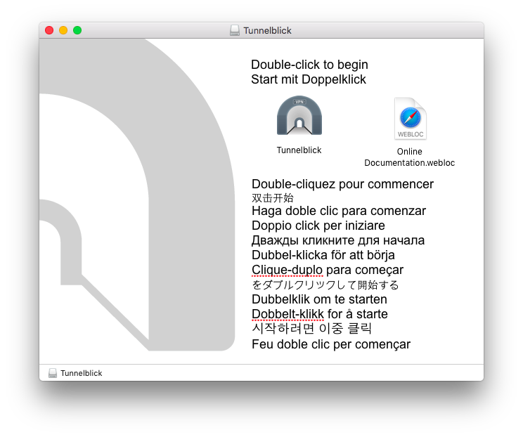
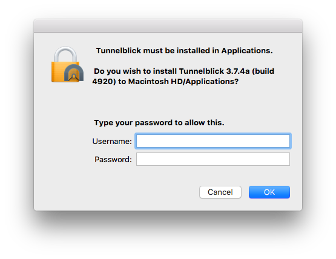

規範
本系 VPN 服務僅提供系上師生進行相關文獻閱覽或在校相關服務使用
由於服務性質因素，若有同學使用 VPN 進行對外攻擊或是大量下載之相關違規事項
經查詢屬實，將停止同學系上帳號及工作站使用權力，還請同學切勿以身試法。
PPTP
由於新版的 iOS 10 和 macOS Sierra 已經移除 PPTP 協定
還請使用該版本以上的同學轉而使用 OpenVPN 的服務
以下教學以 windows 10 作為範例
- 前往網際網路設定點選 VPN 選項
- 點選新增 VPN 連線，輸入如下圖相關資訊

- 設定完成後，點選頁面下方”變更介面卡設定”
- 右鍵點擊建立好之 VPN 介面卡, 選擇內容並切換到安全性的分頁
- 依照下圖紅框指示進行設定，按下確定
- 選取該設定好之 VPN 連線，輸入系上工作站帳密即可成功連線
OpenVPN
Windows
- 前往 OpenVPN 官網下載處。 下載對應客戶端並安裝。

前往 vpn.cs。下載 OpenVPN 設定檔
執行已安裝完成之 OpenVPN GUI, 此時應會出現要求設定檔之提示

- 右鍵點擊右下角 OpenVPN GUI 圖示，點選匯入設定檔選項, 選擇並匯入前述下載之設定檔
- 再次右鍵點擊 OpenVPN GUI 圖示, 點選連線選項

- 輸入系上工作站帳號密碼登入
- 當看到訊息 “已連線至 ccucsie”, 即表示 VPN 連線已完成
MacOS
本教學包含兩部分，請依喜好擇一選用。
- Tunnelblick …for beginner
- Terminal …for advanced user
and good CS student
Tunnelblick
前往 Tunnelblick 官網。 點擊左側綠色箭號 “Download Latest Stable Release”。
當警示視窗跳出，點擊 “Open”。
打開所下載之 dmg 檔案。雙擊 Tunnelblick 圖示。
輸入 mac 使用者帳號及密碼以允許安裝。
安裝完成後，將 中正資工 VPN 設定檔 拖曳到左側 Configuration 欄內。
點選上圖右下方之 “Connect”，或是點選 Spotlight 旁之 Tunnelblick 圖示（如下圖），並點選 “Connect ccucsie”。

以中正資工系工作站帳號及密碼登入。
看到訊息 “ccucsie Connected” 表示 VPN 連線已完成。
Terminal
- 安裝套件管理工具 Homebrew。
Install package management tool Homebrew.$ /usr/bin/ruby -e "$(curl -fsSL https://raw.githubusercontent.com/Homebrew/install/master/install)"
Q: What does homebrew do?
A: Homebrew installs the stuff you need that Apple didn’t.[name=#homebrew][color=brown]
以 Homebrew 安裝 OpenVPN。
$ brew install openvpn
因
openvpn置於/usr/local/sbin/下，而該路徑原生不在PATH中，故將下行加入~/.bashrc中，並重新source ~/.bashrc。export PATH=/usr/local/sbin:$PATH
以
openvpn進行連線。（OpenVPN 設定檔下載）$ sudo openvpn /path/to/config/ccucsie.ovpn

看到訊息 “Initialization Sequence Completed” 表示 VPN 連線已完成。
Sun Nov 12 11:17:53 2017 Initialization Sequence Completed
（選擇性）因密碼可能會快取於記憶體中，請考慮使用參數
auth-nocache以提升安全性。WARNING: this configuration may cache passwords in memory -- use the auth-nocache option to prevent this
Bug Report
若使用上有問題，請聯繫資工系計中信箱。
Last Edited: 2018/10/06 by setsal, contributed by silenttulips